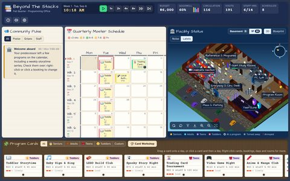
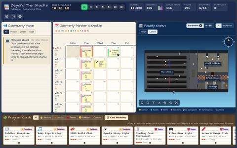
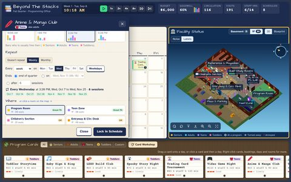
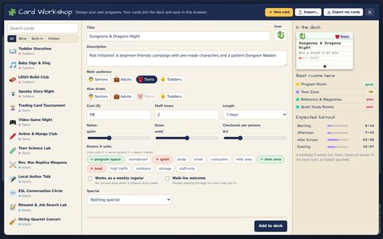
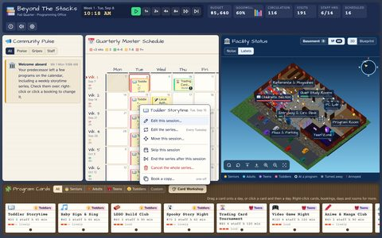
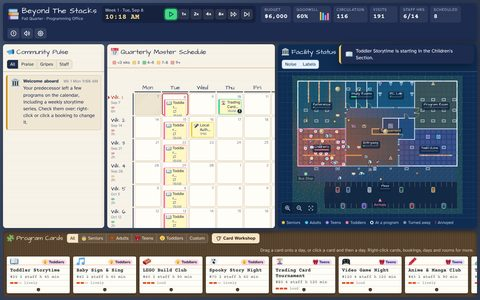
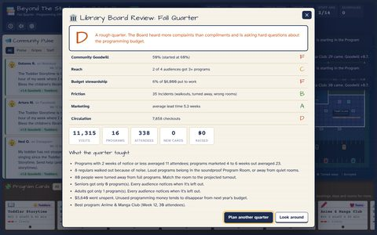
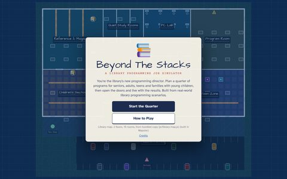

Learning game · A library programming job simulator · HTML / JavaScript / 3D
Beyond The Stacks
A job simulator for public library programming: plan a year of programs for the whole community, then live with the results.
Beyond The Stacks puts you in the role of a library's programming director. It's built from real-world scenarios and from the experience of subject-matter experts who plan, market and run programs in public libraries, so the decisions are the ones the job actually asks for: which audience a program serves, when those people can come, which space it belongs in and what it does to everyone else in the building, how far ahead to promote it, and how to spend a limited budget and a busy staff's time.
You plan on a calendar that runs a full year, from September to September, with the holidays the library closes for and the school breaks that change who can come. Then you open the doors and watch the plan play out. Patrons arrive, find their way through a two-story building (by the stairs, or by the elevator if they need it), and react: a storytime packs the children's area, a loud program drives regulars out of the reading room, a late-promoted author talk plays to empty chairs. Every outcome shows up in the community's feedback and the numbers. Each quarter ends with a report, and at the end of the year the Library Board reviews goodwill, reach, outreach, budget, friction, marketing and circulation, with lessons drawn from your own choices.
Controls: drag a program card onto a day (or click a card, then a day); click a booking to change it, and right-click almost anything for more. Space pause, 1–5 speed (½× to 8×). On the 3D map: drag to pan, scroll to zoom, right-drag to rotate and tilt (or Q/E and T). Fold any panel away with the arrow in its corner; full screen and sound are at the top. Best on a computer.
Tip: click inside the game first so it can detect your keyboard. Your year and the cards you design are saved in your browser. It needs a fairly wide screen: the button at the top of the game, next to the sound switch, plays it full screen.
Screenshots
















What it teaches
The scenarios and numbers behind the game come from the day-to-day work of library programming staff. A few of the lessons it's built around:
- Program for who's actually available. Older adults tend to come in the morning, school-age teens after school, working adults in the evening, and families with young children early in the day. The best program at the wrong hour still draws a small crowd.
- Space shapes the experience. A program affects the whole building, not just its own room: noise carries, quiet-study patrons leave, and a room that's too small means turning people away.
- Promotion takes lead time. Most promotion needs about a month to reach people, and print materials and community partners need even more planning.
- Every audience notices when it's left out. Serving one group well while ignoring another shows up in community goodwill.
- Public money is watched. Refreshments and extras boost turnout, and also draw comments from taxpayers. Leaving budget unspent has consequences too.
- Staff capacity is a real limit. Overbooking a week wears the team down, and program quality drops.
How it plays
- Plan the year. Twenty-six program cards, from Toddler Storytime and a Trading Card Tournament to a Medicare Q&A, a Summer Reading kickoff and a Friends of the Library book sale. Drag them onto a 52-week calendar, jump between quarters, and book seasonal programs in the months they belong to.
- Out in the community. Not every program happens in the library. Take one to two parks, the rec center, or a school: an elementary, a middle and a high school, and a college campus. Each keeps its own hours (schools only during the school day or after it, parks only in fair weather), and a class visit reaches a whole grade at once.
- Your town. Set the town's population when you start, from a small village to a city. Bigger towns bring more walk-ins and bigger crowds, and the Board expects more.
- Timing is everything. Each audience keeps its own hours: seniors in the morning, teens after school, working adults in the evening. Bars in the booking drawer show who's free in each time slot.
- The right room. Each room has its own capacity and character. Quiet rooms are full of people who came for silence; noise spreads through open doorways, less through glass, and not through walls. Overfill a room and people get turned away at the door.
- Niche or broad. A scope slider trades a small, devoted crowd that feels seen for a wide audience that barely converts, and each choice draws its own kind of criticism.
- Marketing lead time. Flyers and glossy posters need four to six weeks to work. Too late and nobody hears about it; too early and they forget.
- Recurring programs. Set up weekly or monthly series like a desk calendar, then change, move or skip single sessions without touching the rest.
- Your own cards. The Card Workshop lets you design new programs (audience, cost, staff time, noise, the rooms they suit) and rename any card.
- The Community Pulse. Every outcome turns into a post: thanks for a great storytime, a taxpayer upset about juice boxes, a regular who couldn't hear herself think. Goodwill is tracked for each audience, and fades for anyone you leave out.
- Reports and the Board's review. A short report closes each quarter. After the year, the Board grades you in seven categories and lists lessons drawn from your own plan, like how programs with short notice drew compared with ones marketed a month out.
Built with Mapster
The library isn't coded by hand. It's a map I made in Mapster, my 3D level editor, and the game reads the whole building from that one file.
- Mapster zones are the rooms. Each zone painted in Mapster becomes a room, and its name ties it to the game's rules: how many people it holds, and whether it's quiet, loud, soundproof or staff-only.
- Its walls decide where people walk and where sound goes. Patrons find their way through Mapster's doors and archways and take its stairs between floors. Noise carries through open doorways, is muffled by doors and glass, and stops at walls.
- Its furniture is used too. Benches and computer seats are where patrons sit first, shelves and counters are in the way, and the map's start point and warp points are where visitors arrive: the parking lot and the bus stop.
- The 3D view is Mapster's own engine. I gave Mapster a viewer mode for this game: no player and no first person, just a camera that pans, zooms, rotates and tilts, which the game uses to draw its patrons, tint rooms, and open doors as people walk through.
- Edit the building, change the game. Move a wall or add a study room in Mapster, export the map, and the game plays on the new layout. A new floor gets its own tab: the library now has a basement, a ground floor and a second floor (teens, the PC lab, reference and quiet study rooms), joined by stairs and an elevator, which I added to Mapster for this.
How it's built
Beyond The Stacks is plain HTML, CSS and JavaScript, with no build step. Each patron is simulated: they pathfind through the building, lose patience in noise and crowds, and check out books on the way out. In 3D they're Kenney's free Mini Characters, and the floors and walls use free photo textures from ambientCG. I tuned the grading by simulating whole years played different ways, from doing nothing to booking carelessly to planning well, and checking that the Board tells them apart.